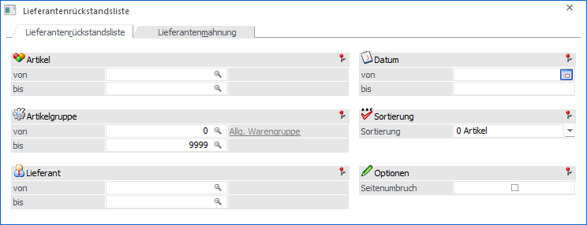
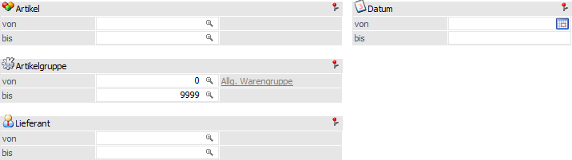
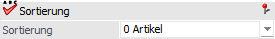
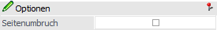
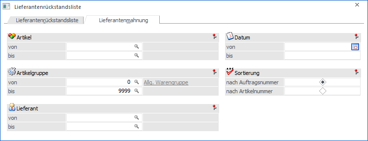
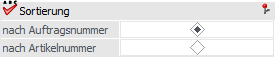
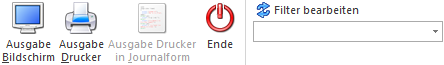

Die Lieferantenrückstandsliste wird über den Menüpunkt…
1 WinLine FAKT
1 Einkauf
1 Lieferantenrückstandsliste
… aufgerufen. Über diese Auswertung können alle noch nicht gelieferten Lieferantenbestellungen in Form einer Liste oder einer Mahnung ausgegeben werden. Die Lieferantenrückstandsliste untergliedert sich dabei in die folgenden Register:
ü Lieferantenrückstandsliste
In
diesem Register kann eine Liste aller noch nicht gelieferten
Lieferantenbestellungen ausgegeben werden. Hierbei wird neben der Bestellmenge
auch die Rückstandsmenge ausgewiesen.
ü Lieferantenmahnung
In diesem
Register können Mahnbelege für Lieferanten über die noch nicht gelieferten
Bestellungen ausgegeben werden. Hierbei wird neben der Bestellmenge auch die
Rückstandsmenge ausgewiesen.
Register "Lieferantenrückstandliste"

In dem Register "Lieferantenrückstandsliste" stehen folgende Eingabefelder und Einstellungen zur Verfügung:
Selektion

Ø Artikel von / bis
An dieser Stelle kann eine Selektion auf die auszuwertenden Artikel vorgenommen werden.
Hinweis
Wird im Feld "Artikel von / bis" z.B. nur eine Artikelnummer eingegeben und dieser Artikel hat auch noch Ausprägungen, so werden alle Ausprägungen automatisch mit angedruckt. Nur wenn während des Anklickens des "Ausgabe-Buttons" die STRG-Taste gedrückt wird, wird nur der Hauptartikel alleine ausgewertet.
Ø Artikelgruppe von / bis
In diesen Feldern kann nach den Artikelgruppen eingeschränkt werden, welche in der Liste berücksichtigt werden sollen.
Ø Lieferanten von / bis
Mit Hilfe dieser Eingabefelder kann eine Selektion die Lieferanten erfolgen.
Ø Datum von / bis
An dieser Stelle kann auf eine Einschränkung auf das (in der Bestellung) vorgegebene Lieferdatum erfolgen.
Sortierung

Ø Sortierung
Die Lieferantenrückstandsliste kann entweder nach "0 - Artikel", nach "1 - Lieferant" oder nach "3 - Datum" sortiert ausgewertet werden.
Optionen

Ø Seitenumbruch
Durch Aktivierung der Option "Seitenumbruch" wird bei jedem Sortierkriterium (also Artikel, Lieferant, Datum) eine neue Seite begonnen.
Register "Lieferantenmahnung"

In dem Register "Lieferantenmahnung" stehen dieselben Selektionsfelder zur Verfügung wie im Register "Lieferantenrückstandsliste", d.h. "Artikel", "Artikelgruppe", "Lieferant" und "Datum". Neben diesen Feldern gibt es noch folgende Einstellung:
Sortierung

Ø Sortierung
An dieser Stelle kann definiert werden, wie die Sortierung innerhalb einer Lieferantenmahnung erfolgen soll. Es stehen die Varianten "nach Auftragsnummer" und "nach Artikelnummer" zur Verfügung.
Hinweis zur Formulargestaltung
Für das Lieferantenmahnungsformular (P02W482 - Lieferantenmahnung) stehen die Flags "A - Erste Seite", "B - Ab 2. Seite" und "C - Letzte Seite" zur Verfügung.
Diese Flags werden bei jedem Lieferantenwechsel initialisiert. D.h. A, B und C wirken pro Lieferant.
Das Flag "E - Einzelausgabe" wird nur abgearbeitet, wenn die Lieferantenmahnung nicht in Journalform ausgegeben wird. Mit Hilfe dieses Flags wird es u.a. ermöglicht, pro Lieferant eine Mail (via Steuerelement "AUX MAIL") erzeugen zu lassen.
Buttons

Ø Ausgabe Bildschirm
Mit Hilfe des Buttons "Ausgabe Bildschirm" oder der Taste F5 wird die Auswertung (Rückstandsliste bzw. Mahnung) am Bildschirm ausgegeben.
Ø Ausgabe Drucker
Durch Anwahl des Buttons "Ausgabe Drucker" wird die Auswertung (Rückstandsliste bzw. Mahnung) am Drucker ausgegeben.
Hinweis
Handelt es sich um Lieferantenmahnungen, so wird pro Lieferant ein einzelner Druck ausgelöst. D.h. im Spooler erscheint pro Lieferant ein Eintrag mit x Seiten.
Ø Ausgabe Drucker in Journalform
Mit diesem Button (steht nur im Register "Lieferantenmahnung" zur Verfügung) können die Lieferantenmahnung in Journalform erfolgen, d.h. es wird kein einzelner Druck pro Lieferant ausgelöst. D.h. im Spooler erscheint ein Eintrag über x Seiten, welche alle Lieferanten beinhaltet.
Ø Ende
Mit dem Button "Ende" bzw. der Taste ESC wird der Menüpunkt geschlossen.
Ø Filter bearbeiten
Durch Anklicken des Buttons "Filter bearbeiten" kann die Lieferantenrückstandsliste bzw. die Lieferantenmahnung nach frei definierbaren Kriterien eingeschränkt werden.